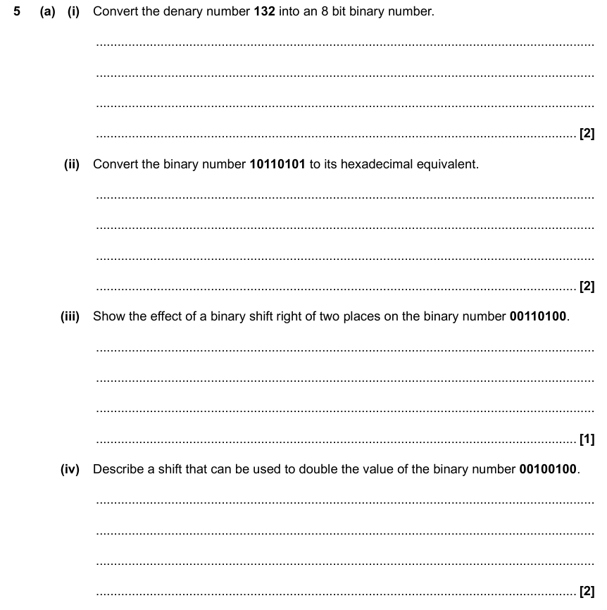

Press s for speaker notes
| … | 103 | 102 | 101 | 100 | |||
|---|---|---|---|---|---|---|---|
| 1000 | 100 | 10 | 1 | ||||
| 27 | 26 | 25 | 24 | 23 | 22 | 21 | 20 |
| 128 | 64 | 32 | 16 | 8 | 4 | 2 | 1 |
we want to convert 10
| 128 | 64 | 32 | 16 | 8 | 4 | 2 | 1 |
| 0 | 0 | 0 | 0 | 1 | 0 | 1 | 0 |
00001010
| 128 | 64 | 32 | 16 | 8 | 4 | 2 | 1 |
| 0 | 0 | 0 | 0 | 1 | 0 | 1 | 0 |
8 + 2 = 10
our hex digit is 1A
we want to convert 1A
